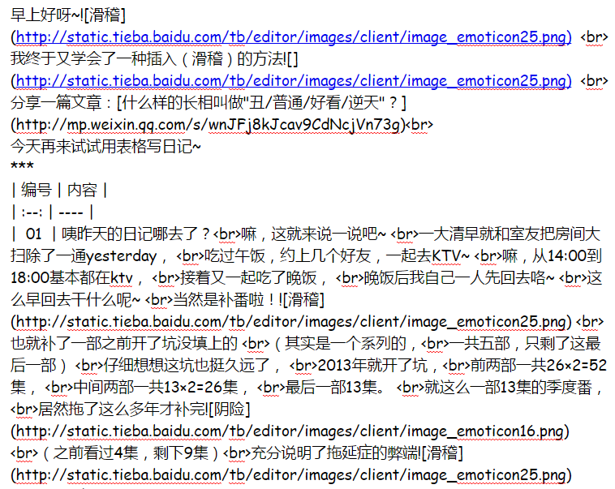

| 编号 | 内容 |
| 01 | 咦昨天的日记哪去了？嘛，这就来说一说吧~ 一大清早就和室友把房间大扫除了一通yesterday， 吃过午饭，约上几个好友，一起去KTV~ 嘛，从14:00到18:00基本都在ktv， 接着又一起吃了晚饭， 晚饭后我自己一人先回去咯~ 这么早回去干什么呢~ 当然是补番啦！ 也就补了一部之前开了坑没填上的 （其实是一个系列的，一共五部，只剩了这最后一部） 仔细想想这坑也挺久远了， 2013年就开了坑，前两部一共26×2=52集， 中间两部一共13×2=26集， 最后一部13集。 就这么一部13集的季度番，居然拖了这么多年才补完 也就补了一部之前开了坑没填上的 （其实是一个系列的，一共五部，只剩了这最后一部） 仔细想想这坑也挺久远了， 2013年就开了坑，前两部一共26×2=52集， 中间两部一共13×2=26集， 最后一部13集。 就这么一部13集的季度番，居然拖了这么多年才补完 （之前看过4集，剩下9集）充分说明了拖延症的弊端 （之前看过4集，剩下9集）充分说明了拖延症的弊端 OK，昨天的事就到这里了 OK，昨天的事就到这里了 |
| 02 | 表情测试：    OK，我已经知道如何做了 OK，我已经知道如何做了 |
03#
为了避免排版混乱， 表格暂时就到这里了 
其实上面那个表格还有各种表情都是一大串代码 
源代码是这样的  ：
：
：
正常开始日记：
上传了一张图片到空间，相册是私密的，试试能不能提取图片出来：唔..貌似可行
04#
来说一说昨晚补番的记录
-- 要不要摸一摸
-- 不必

第一眼看成“雪初音”
好啦，只有这几张截图 
emmm 毕竟是游戏改编的，而且游戏发布之后也有多年时间了，整体感觉还行吧，游戏我也没玩不好评价，番剧嘛可以去看看，百度搜索“初音岛”就有了（跟初音没有任何关系
嗯，总之可以跟这部作品告一段落了 
05#
据说还能插入数学公式，我来试试：
Inline math：
Math block：
有道云笔记也支持Mathjax公式渲染了,像这样：

下面插播一段代码：
chooseImg:function (page, path) {
wx.showToast({
icon: "loading",
title: "正在上传"
}),
wx.uploadFile({
url: constant.SERVER_URL + "/FileUploadServlet",
filePath: path[0],
name: 'file',
header: { "Content-Type": "multipart/form-data" },
formData: {
//和服务器约定的token, 一般也可以放在header中
'id_token': wx.getStorageSync('id_token')
},
success: function (res) {
console.log(res);
if (res.statusCode != 200) {
wx.showModal({
title: '提示',
content: '上传失败',
showCancel: false
})
return;
}
var data = res.data
page.setData({ //上传成功修改显示头像
src: path[0]
})
},
fail: function (e) {
console.log(e);
wx.showModal({
title: '提示',
content: '上传失败',
showCancel: false
})
},
complete: function () {
wx.hideToast(); //隐藏Toast
}
})
}

07#
今晚相同部门的同事们一起聚餐
哎呀，看着这些比我大了几岁的学长们，有一种说不出的心痛(>﹏<)
总之今天就这样了，晚安(´-ωก`)